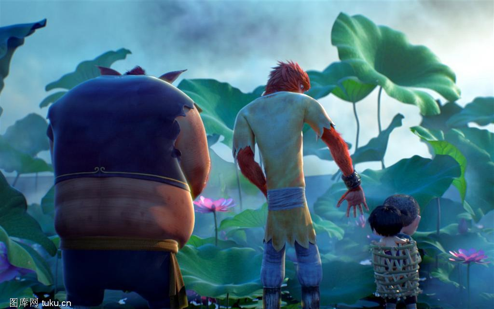

大圣归来故事简介
大闹天宫后四百年多年，齐天大圣成了一个传说，在山妖横行的长安城，孤儿江流儿与行脚僧法明相依为命，小小少年常常神往大闹天宫的孙悟空。 有一天，山妖来劫掠童男童女，江流儿救了一个小女孩，惹得山妖追杀，他一路逃跑，跑进了五行山，盲打误撞地解除了孙悟空的封印。悟空自由之后只想回花果山，却无奈腕上封印未解，又欠江流儿人情，勉强地护送他回长安城。一路上八戒和白龙马也因缘际化地现身，但或落魄或魔性大发，英雄不再。妖王为抢女童，布下夜店迷局，却发现悟空法力尽失，轻而易举地抓走了女童。悟空不愿再去救女童，江流儿决定自己去救。日全食之日，在悬空寺，妖王准备将童男童女投入丹炉中，江流儿却冲进了道场，最后一战开始了。
主要人物介绍
| 孙悟空，曾经大闹天宫，被如来佛压在五行山下四百多年，偶然因江流儿（小唐僧）解开镇压之印，逃出山洞，但是法力尽失，性格狂躁抑郁，看淡功与名，只想回花果山过平凡日子，又因恻隐之心，勉强护送江流儿回长安，一路上不得不与山妖肉搏厮杀。 | |
 |
江流儿，江流儿是年仅7岁的小和尚，父母被山妖害死，成了孤儿。之后被云游僧法明抚养，在长安城长大。江流儿勇敢善良、天真活泼、好奇大度，崇拜大闹天宫的齐天大圣。在他心里孙悟空就像隐形的父亲，直到有一天，他无意间将偶像放出了五行山，却发现大圣已然落魄，法力尽失，只想回那可能再也回不去了的花果山……最终，是这个唠叨的熊孩子激起了大圣的热血，让他在拯救别人的同时成就了自己。 |
| 妖王，反派。结束时被孙悟空斩杀。 |